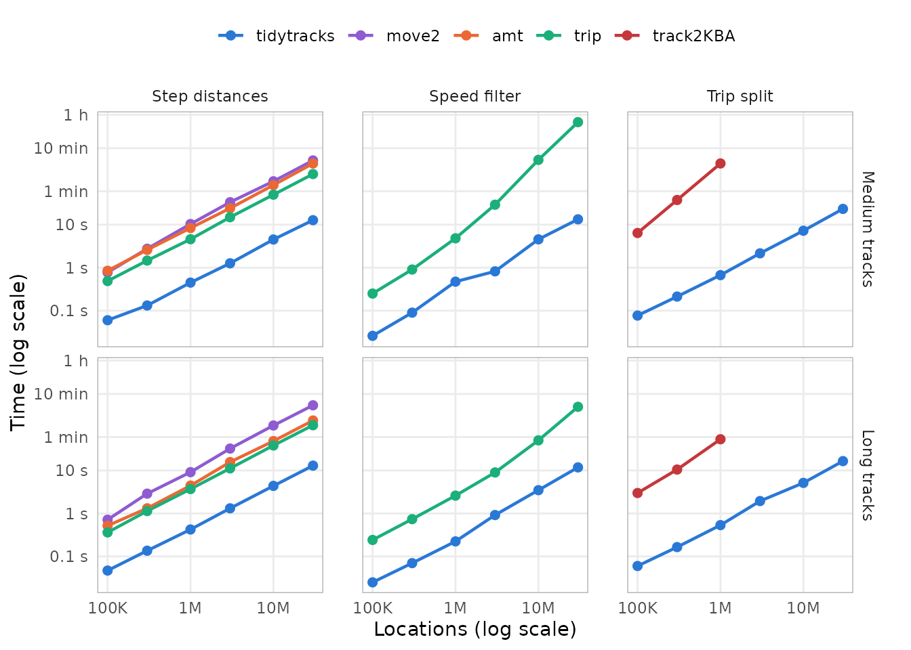

tidytracks works on move2 objects, and many
of its functions do what other packages for tracking data also do. This
article compares how long tidytracks takes for three common
operations with other packages that offer them:
- the distance between consecutive locations of each track (step
lengths), with
move2(Kranstauber et al. 2024),amt(Signer et al. 2019) andtrip(Sumner 2011); - the speed filter of McConnell et al. (1992), with
trip, from whichtidytracksported it; - splitting the tracks of a central place forager into trips away from
its nest, with
track2KBA(Beal et al. 2021).
It also checks that, given the same settings, they give the same results, and shows how the time of each operation grows with the size of the data, up to tens of millions of locations.
The results come first. The second part, How the benchmark was run, describes the simulated tracks and the benchmark, with their code, and how to run it again.
Results
Summary
- Given the same settings, the packages give the same results, except at the ends of some tracks and trips, and up to the differences between geodesic distances and distances on a sphere.
-
tidytracksis the fastest for the three operations. On 30,000,000 locations, in 1,000 tracks of 30,000 locations or 300 tracks of 100,000 locations, it computes the step distances in 13 s, whereas the other packages take 8.8 to 28 times as long (up to 6.1 min withmove2). Its speed filter runs the same algorithm as that oftrip, which takes 14 to 16 times as long, and more on more tracks (40 min for 30,000 tracks of 1,000 locations, against 13 s).track2KBAtakes 99 to 400 times as long to split the tracks into trips, on 1,000,000 locations (4.4 min for 1,000 tracks, against 0.67 s fortidytracks), and would take more than 26 min on 30,000,000 locations. - The time of
tidytracksgrows in proportion to the number of locations, and hardly depends on the number of tracks: it handles all the tracks at once, and adds less than a millisecond per track, whereasamtadds 4.4 ms per track to the step distances. The speed filter oftripandtrack2KBAselect the locations of each track from all the locations, so their times grow with the square of the number of tracks.
The packages are run with the same settings on copies of four sets of simulated tracks (see The data sets and Running the operations). They are compared on 30,000,000 locations in long tracks: copies of tracks of a season and of a year, i.e. 1,000 tracks of 30,000 locations, and 300 tracks of 100,000 locations. To show how the times grow with the size of the data, the data sets of medium tracks (of 1,000 locations) and of long tracks (of 10,000 locations) grow from a single copy of the simulated tracks (100 and 10 tracks) to 300 copies (30,000,000 locations).
Do the packages give the same results?
| Operation | Package | Difference from tidytracks |
|---|---|---|
| Step distances | move2 | up to 0.35% (on a sphere) |
| Step distances | amt | up to 0.35% (on a sphere) |
| Step distances | trip | none (up to rounding errors) |
| Speed filter | trip | none (of the 201 flagged locations) |
| Trip split | track2KBA | only at the ends of trips (798 locations) and of tracks (1 trip) |
-
Step distances:
move2andamtmeasure the steps on a sphere rather than on the ellipsoid (withsf::sf_use_s2(FALSE), they give the same distances astidytracks). -
Speed filter: the two packages flag the same
locations, except in tracks whose second-to-last location is an outlier
(no tracks here).
tidytracksthen flags the locations before the outlier, one at a time, until the speeds to the outlier are low enough, whereastrip(in version 1.10.0) flags only the location just before it, as it computes the speeds between locations two steps apart wrongly for longitudes and latitudes. Neither package can flag the first two and last two locations of a track, whose speeds are not computed by the filter, and an outlier among them can make them flag other locations of the same track instead (none of the 201 simulated outliers are among them;check_first_last = TRUEmakestidytracksalso check the first and last locations). -
Trip split:
track2KBAincludes in each trip the first location back within 5 km of the nest, and, when the last location of a track is the first one beyond 5 km of the nest,tidytracksmakes it a trip of its own (an incomplete one), whereastrack2KBAdoes not.
How long do they take?
On 30,000,000 locations in long tracks (copies of the tracks of a season and of a year):

| Data set | Operation | tidytracks | move2 | amt | trip | track2KBA |
|---|---|---|---|---|---|---|
| 1,000 tracks of 30,000 locations | Step distances | 13 s | 5.7 min | 2.4 min | 1.9 min | |
| 1,000 tracks of 30,000 locations | Speed filter | 10 s | 2.6 min | |||
| 1,000 tracks of 30,000 locations | Trip split | 16 s | not run | |||
| 300 tracks of 100,000 locations | Step distances | 13 s | 6.1 min | 2.3 min | 1.9 min | |
| 300 tracks of 100,000 locations | Speed filter | 11 s | 2.7 min | |||
| 300 tracks of 100,000 locations | Trip split | 16 s | not run |
-
Step distances:
tidytracksis the fastest:move2takes 27 to 28 times as long,amt11 times andtrip8.8 to 9 times.tidytrackscomputes the distances of all the tracks at once (withgeodist), whereasamtandtripmeasure each track in turn. -
Speed filter:
tidytracksandtriprun the same algorithm, in R, buttripfilters each track in turn (selecting its locations from all the locations), and computes the speeds between all the remaining locations again in each pass of the filter, whereastidytracksfilters all the tracks at once, only computes again the speeds around the locations removed in the previous pass, and only computes geodesic distances where the speeds could exceed the maximum (which it finds with a fast upper bound of the distances):triptakes 14 to 16 times as long. Its time also grows with the square of the number of tracks (see How the times grow): on the same number of locations in 30,000 medium tracks, it takes 40 min, against 13 s fortidytracks. -
Trip split:
track2KBAwas not run on these data sets, as it would take more than 26 min on them (30 times its time on the 1,000,000 locations of 100 long tracks, if its time only grew in proportion to the number of locations, whereas it also grows with the number of tracks). On 10 copies of the medium and long tracks, it takes 99 to 400 times as long astidytracks(4.4 min on the 1,000 medium tracks, and 53 s on the 100 long tracks), as it goes through the locations of each track one at a time, in R (see below).
How the times grow

The data sets grow by copying the tracks, from 100 medium tracks or
10 long tracks (100,000 locations) to 30,000 medium tracks or 3,000 long
tracks (30,000,000 locations). The times of tidytracks,
move2 and amt, and the step distances of
trip, grow about in proportion to the number of locations:
on the most copies of the medium tracks, tidytracks takes
about 0.42 µs per location for the step distances, 0.44 µs for the speed
filter, and 0.78 µs for the trips, against 10 µs for the step distances
of move2.
The medium and long tracks have the same number of locations, but the
medium tracks are 10 times as many, so the difference between their
times gives the overhead of each track (e.g. to select its locations, or
to build its results). tidytracks and move2
compute the step distances of all the tracks at once, so their times
hardly depend on the number of tracks (13 s with tidytracks
for 30,000 tracks, against 13 s for 3,000 tracks), whereas
amt and trip add about 4.4 ms and 1.4 ms per
track. Likewise, the speed filter of tidytracks runs on all
the tracks at once (13 s for 30,000 tracks, against 12 s for 3,000
tracks).
The speed filter of trip and track2KBA
select the locations of each track from all the locations, which takes
longer the more locations there are, so the overhead of each track grows
with the size of the data: trip adds about 7.5 ms per track
to the speed filter on 30 copies of the tracks, and 79 ms on 300 copies.
Their times thus grow with the square of the number of tracks: ten times
as many copies of the medium tracks take trip 83 times as
long to filter them (from 3,000 to 30,000 tracks), and
track2KBA 41 times as long to split them into trips (from
100 to 1,000 tracks), as it also adds the trips of each track to those
of the previous tracks with rbind(), which copies them all
each time.
How the benchmark was run
The benchmark takes about 140 minutes to run, so it was run once with
the script vignettes/articles/code/operations_benchmark.R
(in the source code of the package), and its results are read here from
the directory vignettes/articles/data. It uses tracks
simulated beforehand with the script
vignettes/articles/code/operations_benchmark_tracks.R, and
stored in the same directory, so it can be run again (e.g. on another
machine) without simulating them. The code shown below is taken from
these two scripts. Timings depend on the machine (see Machine and software), but the
differences between the packages, and how the times grow with the size
of the data, should be similar on other machines.
The benchmark uses these packages:
library(tidytracks)
# move2, amt, trip and track2KBA are not attached: their functions are called
# with ::, to make clear which package each of them comes fromSimulating tracks
The tracks are those of a central place forager, such as a seabird breeding in a colony, with a GPS location every 5 minutes:
# Simulate the GPS tracks of a central place forager (e.g. a seabird breeding
# in a colony), with a location every 5 minutes: each animal alternates stays
# at its nest (of 2 to 12 hours) and foraging trips (of 6 to 24 hours, to a
# distance of 10 to 80 km from the nest, out on one bearing and back on
# another). The locations have a GPS error of about 30 m, and about 1 in 1000
# of them is an outlier, 50 to 300 km away from where the animal was.
# Returns a data frame with the id, longitude, latitude and time of each
# location, whether it is an outlier, and the location of the nest of each
# animal.
simulate_tracks <- function(name, n_tracks, n_locations, seed) {
set.seed(seed)
# the colony, and the nest of each animal, within about 100 m of it
colony_lon <- -2.56
colony_lat <- 56.19
km_per_degree_lat <- 111.32
km_per_degree_lon <- km_per_degree_lat * cos(colony_lat * pi / 180)
ids <- sprintf("%s_%03d", name, seq_len(n_tracks))
nest_lon <- colony_lon + stats::rnorm(n_tracks, 0, 0.1) / km_per_degree_lon
nest_lat <- colony_lat + stats::rnorm(n_tracks, 0, 0.1) / km_per_degree_lat
one_track <- function(i) {
# bouts at the nest and trips, alternating, until the track has
# n_locations (each pair of bouts has at least 96 locations)
n_pairs <- ceiling(n_locations / 96) + 1
bout_length <- as.vector(rbind(
sample(24:144, n_pairs, replace = TRUE),
sample(72:288, n_pairs, replace = TRUE)
))
on_trip <- rep(c(FALSE, TRUE), n_pairs)
# the track starts at a random point of the first stay at the nest
bout_length[1] <- sample(bout_length[1], 1)
n_bouts <- which(cumsum(bout_length) >= n_locations)[1]
bout_length <- bout_length[seq_len(n_bouts)]
bout <- rep(seq_len(n_bouts), bout_length)[seq_len(n_locations)]
# how far each location is through its bout (between 0 and 1)
progress <- sequence(bout_length)[seq_len(n_locations)] /
(bout_length[bout] + 1)
# distance (in km) and bearing from the nest
max_distance <- stats::runif(n_bouts, 10, 80)[bout]
distance <- ifelse(on_trip[bout], max_distance * sin(pi * progress), 0)
bearing <- stats::runif(n_bouts, 0, 2 * pi)[bout] +
0.6 * sin(2 * pi * progress)
# positions (in km from the nest), with the GPS error
x <- distance * sin(bearing) + stats::rnorm(n_locations, 0, 0.03)
y <- distance * cos(bearing) + stats::rnorm(n_locations, 0, 0.03)
# outliers
outlier <- which(stats::runif(n_locations) < 0.001)
jump <- stats::runif(length(outlier), 50, 300)
jump_bearing <- stats::runif(length(outlier), 0, 2 * pi)
x[outlier] <- x[outlier] + jump * sin(jump_bearing)
y[outlier] <- y[outlier] + jump * cos(jump_bearing)
# a location every 5 minutes (give or take a few seconds), from a random
# time on the first day of tracking
time <- stats::runif(1, 0, 86400) +
cumsum(c(0, 300 + sample(-5:5, n_locations - 1, replace = TRUE)))
list(
lon = nest_lon[i] + x / km_per_degree_lon,
lat = nest_lat[i] + y / km_per_degree_lat,
time = time,
outlier = seq_len(n_locations) %in% outlier
)
}
tracks <- lapply(seq_len(n_tracks), one_track)
data.frame(
id = rep(ids, each = n_locations),
lon = unlist(lapply(tracks, `[[`, "lon")),
lat = unlist(lapply(tracks, `[[`, "lat")),
time = as.POSIXct("2024-06-01", tz = "UTC") +
round(unlist(lapply(tracks, `[[`, "time"))),
outlier = unlist(lapply(tracks, `[[`, "outlier")),
nest_lon = rep(nest_lon, each = n_locations),
nest_lat = rep(nest_lat, each = n_locations)
)
}For example, the first two days of three tracks (the black points are the nests, and the lines that leave the map go to outliers):
example_tracks <- simulate_tracks(
"example",
n_tracks = 3,
n_locations = 576,
seed = 1
)
ggplot(example_tracks, aes(lon, lat)) +
geom_path(colour = "grey40", linewidth = 0.3) +
geom_point(
aes(nest_lon, nest_lat),
data = distinct(example_tracks, id, nest_lon, nest_lat),
colour = "black",
size = 2
) +
facet_wrap(~id) +
coord_quickmap(
xlim = mean(example_tracks$nest_lon) + c(-1.4, 1.4),
ylim = mean(example_tracks$nest_lat) + c(-0.8, 0.8)
) +
labs(x = "Longitude", y = "Latitude") +
theme_minimal() +
theme(panel.grid.minor = element_blank())
The data sets
We simulate four sets of tracks: tracks of medium length, and fewer, longer tracks, with the same number of locations in all (about three and a half days and five weeks of tracking respectively), and a few tracks of a season and of a year (about three and a half months and a year of tracking):
# the number of tracks and of locations per track of each data set: the
# medium and long tracks have the same number of locations in all, and a few
# tracks of a season and of a year are enough for large data sets of their
# copies
sizes <- list(
medium = c(tracks = 100, locations = 1000),
long = c(tracks = 10, locations = 10000),
season = c(tracks = 2, locations = 30000),
year = c(tracks = 1, locations = 100000)
)The tracks were simulated once (with
code/operations_benchmark_tracks.R), and stored in
data/operations_benchmark_tracks.rds, from which the
benchmark reads them:
# the tracks simulated by operations_benchmark_tracks.R: a list of four data
# frames (medium, long, season and year) with the id, longitude, latitude and
# time of each location, whether it is an outlier, and the location of the nest
# of each animal, ordered by track and time
datasets <- readRDS("data/operations_benchmark_tracks.rds")The time taken by an operation on a set of tracks has two parts: one that grows with the number of locations, and an overhead for each track. To see how each part grows, the operations are timed on more and more copies of the medium and long tracks. The packages are compared on copies of the tracks of a season and of a year, with as many locations as the most copies of the medium and long tracks:
# The operations are timed on copies of the simulated tracks: the medium and
# long tracks from a single copy (the simulated tracks themselves) to 300
# copies (30,000 tracks of 1,000 locations, or 3,000 tracks of 10,000
# locations, i.e. 30 million locations), to see how their times grow with the
# size of the data, and enough copies of the tracks of a season and of a year
# for 30 million locations too (1,000 tracks of 30,000 locations, or 300
# tracks of 100,000 locations), to compare the packages on large data sets of
# long tracks
copies <- list(
medium = c(1, 3, 10, 30, 100, 300),
long = c(1, 3, 10, 30, 100, 300),
season = 500,
year = 300
)
# copies of the tracks of a data frame ordered by track and time, each with
# its own id (that of the track, after the number of the copy), so that the
# copies are also ordered by track and time
recycle_tracks <- function(df, n_copies) {
if (n_copies == 1) {
return(df)
}
copy <- rep(seq_len(n_copies), each = nrow(df))
out <- df[rep(seq_len(nrow(df)), n_copies), ]
out$id <- paste0(
"copy", sprintf(paste0("%0", nchar(n_copies), "d"), copy), "_", out$id
)
rownames(out) <- NULL
out
}| Locations | Tracks of 1,000 locations | Tracks of 10,000 locations | Tracks of 30,000 locations | Tracks of 100,000 locations |
|---|---|---|---|---|
| 100,000 | 100 | 10 | ||
| 300,000 | 300 | 30 | ||
| 1,000,000 | 1,000 | 100 | ||
| 3,000,000 | 3,000 | 300 | ||
| 10,000,000 | 10,000 | 1,000 | ||
| 30,000,000 | 30,000 | 3,000 | 1,000 | 300 |
Running the operations
Each package works on its own class of objects: a move2
object for tidytracks and move2, a
track_xyt for amt, a trip object
(a SpatialPointsDataFrame from sp) for
trip, and data frames for track2KBA. These are
built from the data frame of locations of each data set (outside of the
timings):
# the input of each package, built from a data frame of locations; tidytracks
# works on move2 objects, so the same object is used for both packages
make_inputs <- function(df) {
move <- move2::mt_as_move2(
df,
coords = c("lon", "lat"),
crs = 4326,
time_column = "time",
track_id_column = "id",
track_attributes = c("nest_lon", "nest_lat")
)
# the nests, as a column of points in the metadata
show_meta(move) <- show_meta(move) |>
# nolint next: object_usage_linter.
dplyr::mutate(nest = sf_point_col(nest_lon, nest_lat, crs = 4326))
# trip objects are SpatialPointsDataFrames (from sp)
trip_df <- df[, c("lon", "lat", "time", "id")]
sp::coordinates(trip_df) <- c("lon", "lat")
sp::proj4string(trip_df) <- sp::CRS("EPSG:4326")
# the first location of each track, for its nest
first <- !duplicated(df$id)
list(
tidytracks = move,
move2 = move,
# nolint next: object_usage_linter.
amt = amt::make_track(df, lon, lat, time, id = id, crs = 4326),
# the tracks are ordered by time, without duplicates, so trip() does not
# need to correct them (which takes longer than its speed filter)
trip = trip::trip(trip_df, c("time", "id"), correct_all = FALSE),
track2KBA = list(
data = data.frame(
ID = df$id,
Latitude = df$lat,
Longitude = df$lon,
DateTime = df$time
),
colony = data.frame(
ID = df$id[first],
Latitude = df$nest_lat[first],
Longitude = df$nest_lon[first]
)
)
)
}The operations are then run with each package, on all the tracks of a data set:
# The operations timed, with the function of each package, which takes the
# input of its package (all the tracks)
operations <- list(
# the distance from each location to the next one of the same track (in
# km); amt measures the steps of a single track, so it is applied to each
# track in turn, after nesting the tracks as shown in its documentation
distance = list(
tidytracks = function(input) {
event_distance(input, units = as_units("km"))
},
move2 = function(input) {
move2::mt_distance(input, units = "km")
},
amt = function(input) {
input |>
tidyr::nest(data = -id) |>
dplyr::mutate(
steps = purrr::map(data, amt::step_lengths, lonlat = TRUE)
)
},
trip = function(input) {
trip::trackDistance(input, prev = TRUE)
}
),
# the McConnell speed filter, with a maximum speed of 120 km/h
speed_filter = list(
tidytracks = function(input) {
event_flag_mcconnell(input, max_speed = as_units(120, "km/h"))
},
trip = function(input) {
trip::speedfilter(input, max.speed = 120)
}
),
# trips beyond 5 km of the nest, keeping the locations at the nest
trip_split = list(
tidytracks = function(input) {
tt_split_trips(
input,
centre_col = "nest",
buffer_outbound = as_units(5, "km"),
buffer_inbound = as_units(5, "km"),
complete = FALSE
)
},
track2KBA = function(input) {
track2KBA::tripSplit(
input$data,
colony = input$colony,
innerBuff = 5,
returnBuff = 5,
duration = 0,
nests = TRUE,
rmNonTrip = FALSE,
verbose = FALSE
)
}
)
)The settings are matched so that the packages give the same results:
-
Step distances:
tidytracksandtripcompute geodesic distances on the WGS84 ellipsoid (with thegeodistpackage), whereasmove2andamtusesf::st_distance(), which, withs2(the default ofsf), computes great circle distances on a sphere.tidytracks,move2andamtgiveNAfor the last location of each track, andtripgives 0.amtmeasures the steps of a single track, so its tracks are nested and measured in turn, as in its documentation, and this is included in its time. -
Speed filter:
tidytracksandtriprun the same algorithm, with a maximum speed of 120 km/h (triptakes it in km/h, for longitudes and latitudes). The optional check of the first and last locations of each track oftidytracksis off by default. -
Trip split: both packages use the nest of each
animal, start a trip when the animal goes further than 5 km from it, end
it when it comes back within 5 km, and keep the locations at the nest.
track2KBAdrops trips shorter than a minimum duration, which is set to 0 here, astidytrackshas none.
Each operation is run once, on an otherwise idle machine, and on a single performance core of its CPU (see Running the benchmark again); the operations that take long are timed precisely enough by a single run:
# Time an operation, once (system.time() first frees the memory used by the
# previous operations), and return its result and its time (in s)
time_operation <- function(operation, input) {
seconds <- system.time(result <- operation(input))[["elapsed"]]
list(result = result, seconds = seconds)
}
# the data sets (the number of copies of each set of simulated tracks), from
# the smallest to the largest, so that no data set is timed just after a much
# larger one
runs <- data.frame(
dataset = rep(names(copies), lengths(copies)),
copies = unlist(copies, use.names = FALSE)
)
n_locations <- runs$copies * vapply(datasets[runs$dataset], nrow, numeric(1))
runs <- runs[order(n_locations), ]
timings <- list()
check_results <- list()
for (i in seq_len(nrow(runs))) {
dataset <- runs$dataset[i]
n_copies <- runs$copies[i]
df <- recycle_tracks(datasets[[dataset]], n_copies)
inputs <- make_inputs(df)
n_tracks <- length(unique(df$id))
for (operation in names(operations)) {
results <- list()
for (package in names(operations[[operation]])) {
# track2KBA is only run on up to a million locations: its time grows
# with the number of locations times the number of tracks, and it
# would take hours on 10 million
if (package == "track2KBA" && nrow(df) > 1e6) {
next
}
message(
"Timing ", operation, " with ", package, " on ", n_copies,
" copies of the ", dataset, " tracks"
)
timed <- time_operation(
operations[[operation]][[package]],
inputs[[package]]
)
timings[[length(timings) + 1]] <- data.frame(
dataset = dataset,
copies = n_copies,
tracks = n_tracks,
locations = nrow(df) %/% n_tracks,
operation = operation,
package = package,
seconds = timed$seconds
)
# the results are compared on the simulated tracks (their copies give
# the same results)
if (n_copies == 1) {
results[[package]] <- timed$result
}
rm(timed)
}
if (n_copies == 1) {
check_results[[length(check_results) + 1]] <- data.frame(
dataset = dataset,
operation = operation,
checks[[operation]](results, df)
)
}
rm(results)
}
rm(df, inputs)
}
timings <- do.call(rbind, timings)
check_results <- do.call(rbind, check_results)The results of each package are then compared with those of
tidytracks, on the simulated medium and long tracks:
# Compare the results of each package with those of tidytracks, for the
# data frame of locations `df`, which is ordered by track and time. Returns a
# data frame of checks: the largest relative difference between the step
# distances, the number of locations flagged differently by the speed
# filter, and the number of trips found by each package and of locations in
# them (and why they differ).
compare_distance <- function(results, df) {
# in km, with NA for the last location of each track
tidytracks <- as.numeric(results$tidytracks)
last <- is.na(tidytracks)
others <- list(
move2 = as.numeric(results$move2),
# amt::make_track() orders the locations by time, whatever their track,
# so its tracks are nested in the order in which they start
amt = unlist(
results$amt$steps[match(unique(df$id), results$amt$id)]
) / 1000,
trip = results$trip
)
data.frame(
package = names(others),
check = "largest relative difference in step distance",
value = vapply(others, function(d) {
stopifnot(length(d) == length(tidytracks))
max(abs(d[!last] / tidytracks[!last] - 1), na.rm = TRUE)
}, numeric(1))
)
}
compare_speed_filter <- function(results, df) {
flagged <- !results$tidytracks
differ <- results$tidytracks != results$trip
tracks_differ <- unique(df$id[differ])
# the first two and last two locations of each track, which the filter
# cannot flag
n <- nrow(df)
first <- c(TRUE, df$id[-1] != df$id[-n])
last <- c(df$id[-1] != df$id[-n], TRUE)
second <- c(FALSE, first[-n])
second_to_last <- c(last[-1], FALSE)
ends <- first | second | second_to_last | last
# the tracks whose second-to-last location is an outlier
outlier_second_to_last <- unique(df$id[second_to_last & df$outlier])
data.frame(
package = c(
"both", "both", "tidytracks", "tidytracks", "trip", "trip", "trip"
),
check = c(
"outliers",
"outliers among the first two or last two locations of a track",
"locations flagged",
"outliers flagged",
"locations flagged differently",
"tracks with locations flagged differently",
"tracks with an outlier second to last, flagged differently"
),
value = c(
sum(df$outlier),
sum(df$outlier & ends),
sum(flagged),
sum(flagged & df$outlier),
sum(differ),
length(tracks_differ),
length(intersect(tracks_differ, outlier_second_to_last))
)
)
}
compare_trip_split <- function(results, df) {
# tidytracks: the locations at the nest are in the dummy trips *_trip_na
tt_trip <- results$tidytracks$trip_id
tt_in_trip <- !grepl("_trip_na$", tt_trip)
# track2KBA: the locations at the nest are in the trip "-1" (its results
# are ordered by track and time, as df)
stopifnot(identical(as.character(results$track2KBA$ID), df$id))
kba_trip <- results$track2KBA$tripID
kba_in_trip <- kba_trip != "-1"
# track2KBA also includes in each trip the first location back within the
# buffer, i.e. the location after the last one of a trip of tidytracks
n <- nrow(df)
after_trip <- c(FALSE, tt_in_trip[-n] & df$id[-1] == df$id[-n])
return_to_nest <- !tt_in_trip & kba_in_trip & after_trip
# tidytracks starts a trip at the last location of a track if it is the
# first one beyond the buffer, but track2KBA does not
last <- c(df$id[-1] != df$id[-n], TRUE)
trip_at_end <- tt_in_trip & !kba_in_trip & last & !after_trip
data.frame(
package = c(
"tidytracks", "track2KBA", "tidytracks", "track2KBA", "track2KBA",
"tidytracks", "both"
),
check = c(
"trips", "trips", "locations in trips", "locations in trips",
"returns to the nest in a trip",
"trips of the last location of a track",
"other locations in a trip in only one package"
),
value = c(
length(unique(tt_trip[tt_in_trip])),
length(unique(kba_trip[kba_in_trip])),
sum(tt_in_trip),
sum(kba_in_trip),
sum(return_to_nest),
sum(trip_at_end),
sum(tt_in_trip != kba_in_trip & !return_to_nest & !trip_at_end)
)
)
}
checks <- list(
distance = compare_distance,
speed_filter = compare_speed_filter,
trip_split = compare_trip_split
)From the results to the tables and plots
The benchmark saves its results in
data/operations_benchmark_*.csv, which are read and
summarised for the results above with this
code:
# to summarise and plot the results
library(dplyr)
library(tidyr)
library(ggplot2)
# the results of the benchmark, saved by the script in the directory data
timings <- read.csv("data/operations_benchmark_timings.csv")
checks <- read.csv("data/operations_benchmark_checks.csv")
session <- read.csv("data/operations_benchmark_session.csv")
operation_labels <- c(
distance = "Step distances",
speed_filter = "Speed filter",
trip_split = "Trip split"
)
dataset_labels <- c(
medium = "Medium tracks",
long = "Long tracks",
season = "Tracks of a season",
year = "Tracks of a year"
)
# the data sets on which the times grow (copies of the medium and long
# tracks), and those on which the packages are compared (copies of the tracks
# of a season and of a year)
growth_sets <- c("medium", "long")
compared_sets <- c("season", "year")
package_levels <- c("tidytracks", "move2", "amt", "trip", "track2KBA")
timings <- timings %>%
mutate(
total = tracks * locations,
data_set = paste(
format(tracks, big.mark = ",", trim = TRUE), "tracks of",
format(locations, big.mark = ",", trim = TRUE), "locations"
),
operation = factor(operation_labels[operation], operation_labels),
dataset = factor(dataset_labels[dataset], dataset_labels),
package = factor(package, package_levels)
)
# the packages compared for each operation
operation_packages <- distinct(timings, operation, package)
# the packages are compared on the copies of the tracks of a season and of a
# year, with the operations that were not run on them
compared <- timings %>%
filter(dataset %in% dataset_labels[compared_sets]) %>%
mutate(data_set = factor(data_set, unique(data_set)))
not_run <- compared %>%
distinct(dataset, data_set) %>%
cross_join(operation_packages) %>%
anti_join(compared, by = c("dataset", "operation", "package"))
# the times on the copies of the medium and long tracks, up to the most copies
growth_timings <- timings %>%
filter(dataset %in% dataset_labels[growth_sets]) %>%
mutate(dataset = droplevels(dataset))
most_copies <- max(growth_timings$copies)and the plots of the timings are drawn with:
# one colour per package
package_colours <- c(
tidytracks = "#2a78d6",
move2 = "#8e5bd0",
amt = "#eb6834",
trip = "#1baf7a",
track2KBA = "#c4373b"
)
# times on a log scale, labelled in seconds, minutes and hours, every factor
# of 10 (or of about 3, for the plot of the data sets on which the packages
# are compared)
time_labels <- c(
"0.01" = "0.01 s", "0.03" = "0.03 s", "0.1" = "0.1 s", "0.3" = "0.3 s",
"1" = "1 s", "3" = "3 s", "10" = "10 s", "60" = "1 min", "180" = "3 min",
"600" = "10 min", "1800" = "30 min", "3600" = "1 h"
)
time_breaks <- as.numeric(names(time_labels))
# 0.01 s, 0.1 s, 1 s, 10 s, 1 min, 10 min and 1 h
decades <- c(1, 3, 5, 7, 8, 10, 12)
ggplot(compared, aes(x = seconds, y = package, colour = package)) +
geom_point(size = 3) +
# the packages that were not run on these data sets
geom_text(
data = not_run,
aes(x = sqrt(prod(range(compared$seconds))), label = "not run"),
colour = "grey40",
size = 3
) +
# each operation with its own packages
facet_grid(operation ~ data_set, scales = "free_y", space = "free_y") +
scale_x_log10(breaks = time_breaks, labels = time_labels) +
scale_y_discrete(limits = rev) +
scale_colour_manual(values = package_colours, guide = "none") +
labs(x = "Time (log scale)", y = NULL) +
theme_minimal() +
theme(
panel.grid.minor = element_blank(),
panel.grid.major.y = element_blank(),
panel.spacing.x = unit(2, "lines"),
strip.text.y = element_text(angle = 0, hjust = 0),
panel.border = element_rect(
colour = "grey70",
fill = NA,
linewidth = 0.5
)
)
ggplot(growth_timings, aes(x = total, y = seconds, colour = package)) +
geom_line(linewidth = 0.8) +
geom_point(size = 2) +
facet_grid(dataset ~ operation) +
scale_x_log10(
labels = scales::label_number(scale_cut = scales::cut_short_scale())
) +
scale_y_log10(
breaks = time_breaks[decades],
labels = time_labels[decades]
) +
scale_colour_manual(values = package_colours) +
labs(
x = "Locations (log scale)",
y = "Time (log scale)",
colour = NULL
) +
theme_minimal() +
theme(
panel.grid.minor = element_blank(),
panel.spacing.x = unit(1.5, "lines"),
# room for the last label of the x axis
plot.margin = margin(5.5, 15, 5.5, 5.5),
legend.position = "top",
panel.border = element_rect(
colour = "grey70",
fill = NA,
linewidth = 0.5
)
)Running the benchmark again
To run the benchmark again (e.g. after changing
tidytracks, or on another machine), install
tidytracks (with R CMD INSTALL, rather than
loading it with devtools::load_all(), which compiles its
C++ code without optimisation) and the other packages, and run, on an
otherwise idle machine with more than 66 GB of memory (the most that the
benchmark used, on the largest data sets):
which overwrites data/operations_benchmark_*.csv; then
render this article again. taskset -c 4 (on Linux) runs R
on core 4 only: on a CPU with performance and efficiency cores, such as
the Intel i9-13900 used here, the efficiency cores are almost half as
fast, and R could otherwise move from one kind of core to the other
during the benchmark, which would change the times of some operations
more than others. Use one of the performance cores
(lscpu -e lists the cores, with their maximum frequency),
or drop taskset -c 4 on a CPU whose cores are all the
same.
Rscript code/operations_benchmark.R quick runs
everything on the first locations of a few tracks, to check the script,
and saves its results in a temporary directory instead. The simulated
tracks are only needed again for a different simulation:
Rscript code/operations_benchmark_tracks.R simulates them
and overwrites data/operations_benchmark_tracks.rds.
Machine and software
| date | 2026-10-30 |
| R | R version 4.5.2 (2025-10-31) |
| platform | x86_64-pc-linux-gnu |
| CPU | 13th Gen Intel(R) Core(TM) i9-13900 |
| cores | 24 |
| cores used | 4 |
| memory (GB) | 126 |
| BLAS | blas/libblas.so.3.12.0 |
| tidytracks | 0.2.1.9004 |
| move2 | 0.5.0 |
| amt | 0.3.1.0 |
| trip | 1.10.0 |
| track2KBA | 1.1.3 |
| sf | 1.1.3 |
| sp | 2.2.3 |
| s2 | 1.1.12 |
| geodist | 0.1.1 |
| units | 1.0.1 |
| run time (minutes) | 139 |
| peak memory (GB) | 66 |
References
Beal, M., Oppel, S., Pearmain, E. J., Morera-Pujol, V., Carneiro, A. P. B., Davies, T. E., Phillips, R. A., Taylor, P. R., Miller, M. G. R., Franco, A. M. A., Catry, I., Patrício, A. R., Regalla, A., Staniland, I., Boyd, C., Catry, P. & Dias, M. P. (2021). track2KBA: an R package for identifying important sites for biodiversity from tracking data. Methods in Ecology and Evolution, 12, 2372-2378. https://doi.org/10.1111/2041-210X.13713
Kranstauber, B., Safi, K. & Scharf, A. K. (2024). move2: R package for processing movement data. Methods in Ecology and Evolution. https://doi.org/10.1111/2041-210X.14383
McConnell, B. J., Chambers, C. & Fedak, M. A. (1992). Foraging ecology of southern elephant seals in relation to the bathymetry and productivity of the Southern Ocean. Antarctic Science, 4, 393-398.
Signer, J., Fieberg, J. & Avgar, T. (2019). Animal movement tools (amt): R package for managing tracking data and conducting habitat selection analyses. Ecology and Evolution, 9, 880-890.
Sumner, M. D. (2011). The tag location problem. PhD thesis,
University of Tasmania (which describes the trip
package).